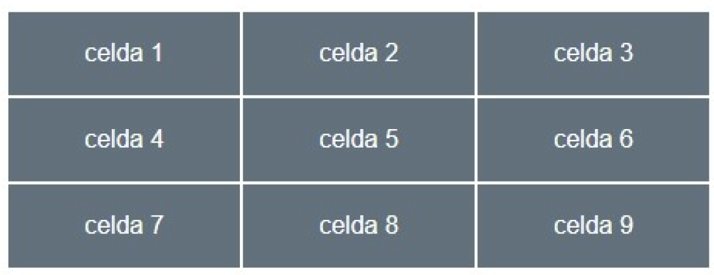

celda 1
celda 2
celda 3
celda 4
celda 5
celda 6
celda 7
celda 8
celda 9
Trata de construir esta tabla usando el display de tipo grid. Los elementos con el texto celda 1, celda 2... son bloques div que irán escritos en ese orden y con una clase que alinea el texto al centro. El gap o separación entre celdas es de 1px. Lo importante del ejercicio es aplicar la estrucutra con el layout grid y que tenga este aspecto.
